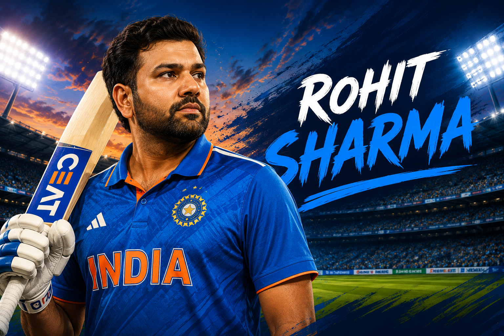

Test
- Matches
- 67
- Innings
- 116
- Not outs
- 10
- Runs
- 4,301
- Highest score
- 212
- Batting average
- 40.58
- Strike rate
- 57.05
- Hundreds
- 12
- Fifties
- 18
- Fours
- 473
- Sixes
- 88

Rohit Sharma is an India international opening batter. As of 30 August 2026, he remains active in ODI cricket after retiring from T20 internationals in June 2024 and Test cricket in May 2025.
Statistics as of: 30 August 2026.
Test and T20I figures are final career totals. ODI figures include matches through 19 July 2026 and may change if Rohit plays again.
Primary career statistics source: BCCI. Detailed innings, not-out, boundary and strike-rate fields were reconciled with ESPNcricinfo records using the same cutoff.
6 November 2013
Against West Indies at Eden Gardens, Kolkata.
23 June 2007
Against Ireland at Civil Service Cricket Club, Stormont, Belfast.
19 September 2007
Against England at Kingsmead, Durban.
Status as of 30 August 2026. Rohit retired from T20 internationals on 29 June 2024 and from Test cricket on 7 May 2025. He remains an active ODI batter based on his selection and appearances for India in July 2026; no official ODI-retirement announcement had been made. He does not hold a current India international captaincy role.
Retired on 7 May 2025 after 67 Test matches.
Active as a batter. He most recently played for India against England at Lord’s on 19 July 2026.
Retired on 29 June 2024 after captaining India to the ICC Men’s T20 World Cup title.
Captained India in the 2023 ICC World Test Championship Final, where India finished runners-up.
Captained India to the 2023 ICC Men’s Cricket World Cup final after ten consecutive wins.
Captained India to the ICC Men’s T20 World Cup title through an unbeaten campaign.
Captained India to the ICC Men’s Champions Trophy title through an unbeaten campaign and was Player of the Match in the final after scoring 76.
Scored 264 against Sri Lanka at Eden Gardens, the highest individual score in men’s ODI cricket.
Became the only batter to score three ODI double-centuries.
Scored seven centuries in men’s ODI World Cups, including a record five in the 2019 edition.
Became the first batter to score five men’s T20I centuries.
Became the first player to reach 600 sixes in international cricket.
Scored 177 against West Indies on Test debut and followed it with 111 not out, making centuries in each of his first two Tests.